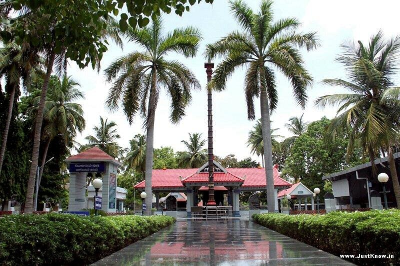

Tiruchirappalli, stands out as a vibrant gem in Tamil Nadu, celebrated for its exceptional livability and cleanliness. Nestled in the heart of the state, this city blends historical charm with modern dynamism. From its strategic central location to its accolade as one of India’s safest cities for women, Tiruchirappalli is not just a place but a thriving, welcoming community. With a blend of tradition and progress, it's a city where history and modernity come together seamlessly.
Let's Explore it!!
"First comes First"
The RockFort Temple
When talking about Trichy,How can we not talk about Rockfort Temple. Tiruchirappalli Rock Fort, perched atop an 83-meter rock, is a striking historic site in Tamil Nadu. This ancient fortress, featuring the Ucchi Pillayar and Thayumanaswami temples, witnessed epic battles and was pivotal in the Carnatic Wars. Its dramatic history and stunning views make it a must-see landmark in Tiruchirappalli.
"India's Ancient Engineering Marvel"
Kallanai Dam
Kallanai, also known as the Grand Anicut, is a marvel of ancient engineering built by the Chola king Karikala in 150 CE. Spanning the Kaveri River, this dam, located 15 km from Tiruchirappalli, is the oldest operational water-regulation structure in India and the fourth oldest in the world. Its remarkable architecture and enduring legacy make it a standout historical and tourist gem in Tamil Nadu.
"India's Majestic Shrine"
Sri Ranganathaswamy Temple
The Ranganathaswamy Temple in Srirangam, Tamil Nadu, is a colossal Hindu shrine dedicated to Vishnu, boasting the largest temple complex in India. Its stunning Dravidian architecture and 73-meter tower make it a marvel of ancient design. The temple’s annual festival draws over a million pilgrims, showcasing its vibrant cultural significance. As a UNESCO-nominated World Heritage Site, it won the Asia Pacific Award of Merit in 2017 for its outstanding heritage conservation.

"Serenity,Greenery and Inclusive Worship"
Sri Ayyappan Temple
The Ayyappan Temple in Trichy is celebrated for its immaculate surroundings, serene ambiance, and lush greenery. Its expansive meditation hall accommodates up to 100 devotees, offering a peaceful retreat. Known for its welcoming and inclusive spirit, the temple shines during the Thirukarthikai festival in November and December. It invites visitors from around the globe to experience its tranquility.
"For Nature Lovers and Adventurers"
Puliyancholai Falls
Puliyancholai offers a perfect retreat from city bustle, with its natural springs, verdant forests, and peaceful rivulets. It’s a haven for trekkers and adventurers, featuring scenic trails, herbal explorations, and the Pithukulli cave and forest temple. With comfortable accommodations and convenient access to waterfalls, it’s an ideal destination for nature enthusiasts.
"A Historic Masterpiece"
Mukkombu
Mukkombu, meaning "three branches" in Tamil, is a historic 685-meter dam on the Cauvery River, located 18 km from Trichy. Constructed by Sir Arthur Cotton between 1836 and 1838, the dam splits into three channels, creating the scenic island of Srirangam nestled within the Thanjavur delta. Renowned for its engineering marvel and picturesque surroundings, Mukkombu is a top tourist attraction in Trichy.
"Not Only Temples"
St. Lourdes Church
Lady of Lourdes Church in Tiruchirapalli, Tamil Nadu, is a historic Roman Catholic church built between 1895 and 1903. Its Gothic architecture and iconic spire images make it a notable landmark. Renovated in 1998, the church offers daily services and celebrates four annual feasts, with the Feast of Our Lady of Lourdes on February 11 being the most significant. As a major city landmark, it is managed by the Jesuits and linked to the Roman Catholic Diocese of Tiruchirapalli.
"Journey through Railway Heritage"
The Railway Museum
Opened on February 18, 2014, by Southern Railway’s Rakesh Misra, the Rail Museum in Trichy is a 9,000-square-foot tribute to railway heritage, featuring a toy train track and rich exhibits. Celebrating South Indian Railways' 150th anniversary, this museum offers an engaging glimpse into railway history and is perfect for educational trips and family outings. Explore this gem near Trichy Central Bus Stand for a memorable visit.
"Want to see Beautiful Butterflies?"
Butterfly Park
The Tropical Butterfly Conservatory, set in the 25-acre Upper Anaicut reserve forest in Srirangam, is Asia's largest butterfly park. Located within the Cauvery and Kollidam river basins, it boasts a stunning Butterfly Park and the enchanting Nakshatravanam (star forest). Managed by the Tiruchirappalli Forest Division, this conservatory provides a captivating and immersive natural experience.
"Finishing with Shopping"
Local Shops
Cap off your trip with a visit to Kadaiveedhi, where a vibrant array of dresses, toys, and gifts awaits. This bustling hub is alive with people and children, offering a feast for the senses with its diverse shops and eateries. Experience the city’s enchanting glow as it comes alive at night.